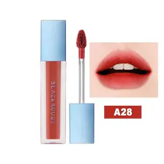

165.000đ
Thương hiệu: Black Rouge (Hàn Quốc)
Chất son: Kem lì xốp nhẹ (Air Fit Velvet)
Nhắc đến Black Rouge là không thể không nhắc đến dòng Air Fit Velvet Tint đình đám, đặc biệt là màu A12 huyền thoại. Với mức giá rẻ và chất lượng vượt trội, thỏi son này gần như có mặt trong túi xách của mọi cô gái trẻ.
Đúng như tên gọi "Air Fit", kết cấu son vô cùng nhẹ nhàng, tựa như không khí lướt trên môi. Son chứa các hạt phấn tạo màu siêu nhỏ che phủ hoàn hảo các khuyết điểm, mang lại lớp finish lì nhưng vẫn giữ được độ ẩm mịn màng.